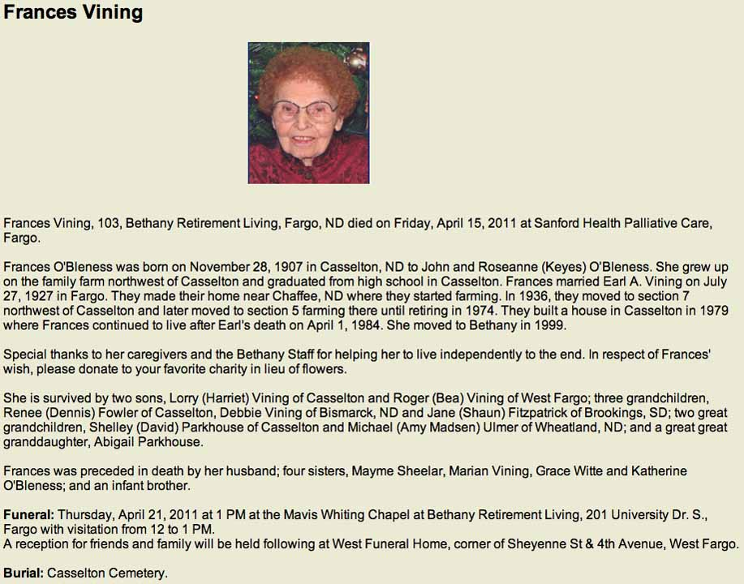
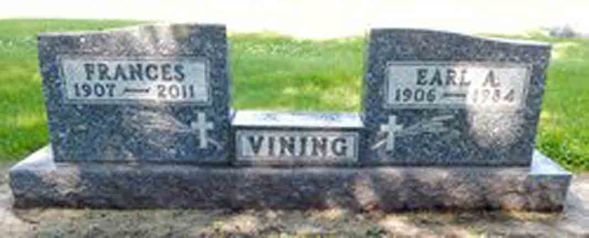
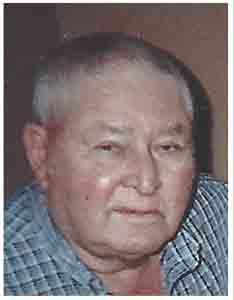
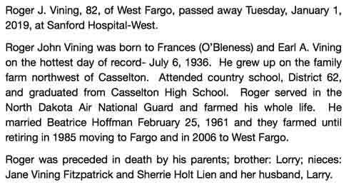
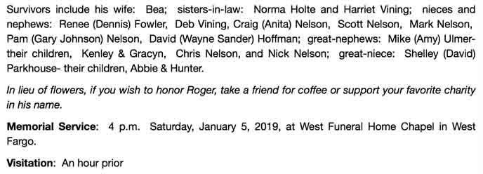

Documentation for Earl A. Vining - Frances O'Bleness
Census Data
1930
1940
Earl A. Vining
23
33
Frances (O'Bleness) Vining
22
32
Lorry E. Vining
1 m.
10
Roger J. Vining
3
1930
Casselton Township, Cass County, North Dakota. In 1930, Earl A. Vinng and his wife and son were living in the household of his wife's parents.
1940
Casselton Township, Cass County, North Dakota. Also living in this household in 1940 was hired man Lynn Jones (36 y., b. Iowa).
Death Data
Obituary for Frances (O'Bleness) Vining:

Gravestones for Earl A. Vining and Frances (O'Bleness) Vining, in Casselton Cemetery, Casselton, Cass County, North Dakota (source: Find A Grave):

Roger J. Vining:

Obituary for Roger J. Vining, son of Earl A. Vining and Frances (O'Bleness) Vining:

